В этом уроке:
- работаем с камерой
Давайте вспомним тезисно материал прошлого урока.
1) Наш экран - двумерный. Соответственно, чтобы вывести на него изображение, система использует только x и y координаты. Координата z используется для определения какую точку выводить, если у нескольких точек совпадают xy-координаты, и трехмерности она никак не добавляет. Для придания картинке трехмерности используется w, с ее помощью система эмулирует перспективу.
2) Мы в своем приложении хотим описывать трехмерный мир и использовать для этого трехмерную систему координат XYZ.
3) Матрица перспективы позволяет нам реализовать хотелку из п.2. Она выполняет преобразования виртуальных трехмерных координат в двумерные (п.1), чтобы система смогла нарисовать изображение, которое выглядит как трехмерное.
4) Трехмерное изображение ограничивается со всех сторон фигурой, которая является призмой или усеченной пирамидой, и называется frustum. В вершине пирамиды находится камера, т.е. точка, из которой мы "смотрим" на изображение. Взгляд камеры проходит насквозь через frustum.
5) По умолчанию, камера находится в точке (0,0,0) и смотрит вдоль оси z в сторону убывания.
В этом уроке мы будем обсуждать пункт 5, т.е. как мы можем повлиять на положение и направление камеры.
Если у вас какая-то сложная 3D-сцена с кучей мелких объектов и вы хотите, например, чтобы пользователь мог осмотреть ее со всех сторон, то вместо того, чтобы поворачивать все объекты перед камерой, мы можем просто перемещать саму камеру. В итоге, конечно, система будет пересчитывать все точки всех объектов, но нам это не грозит никаким сложностями, мы будем просто указывать положение и направление камеры.
Чтобы задать направление и положение камеры, используются две точки и вектор.
Первая точка - это положение камеры. По умолчанию это точка с координатами (0,0,0). Тут мы можем указать любую точку и, тем самым, переместить камеру куда угодно.
Вторая точка задает направление камеры. Т.е. в эту точку камера "смотрит". Тут мы также можем указать любую точку и камера будет направлена именно на нее.
Остается вектор. Это уже не так просто объяснить, как две точки. Представьте себе, что у вашей камеры есть антенна, как у рации или старого мобильного телефона. Антенна эта направлена вверх относительно камеры. Направление, на которое указывает антенна, и есть вектор. Чтобы как-то отличать его просто от понятия вектора, я буду называть его up-вектор.
Чтобы лучше это понять, представьте, что вы берете камеру, помещаете ее в положение, заданное первой точкой. Далее направляете ее на вторую точку. Все. Камера у вас зафиксирована. Вы теперь не можете ни сместить ее, ни повернуть в другом направлении, чтобы не уйти от первой и второй точек. Единственное, что вы можете, чтобы не нарушить ни положения, ни направления, это поворачивать камеру по часовой или против часовой стрелки вокруг оси «взгляда». При этом камера остается в первой точке и направление ее не меняется, она продолжает смотреть на вторую. Просто итоговая картинка будет поворачиваться по часовой или против часовой стрелки. И вот этот поворот регулируется вектором, который всегда направлен вверх камеры, как антенна.
В итоге две точки и вектор однозначно задают положение камеры в пространстве.
Давайте перейдем к практике. Мы рассмотрим несколько примеров, где будем менять обе точки и вектор, и увидим, к чему это приводит.
Скачивайте исходники и открывайте модуль lesson173_view
Как обычно, смотрим класс OpenGLRenderer.
Обратите внимание, у нас объявлены три матрицы:
mProjectionMatrix – эта матрица нам уже знакома по прошлому уроку. Она будет отвечать за создание трехмерного мира
mViewMatrix – эта матрица будет содержать данные о положении и направлении камеры. В этом уроке будем работать в основном с ней
mMatrix – итоговая матрица, которая будет получена перемножением mProjectionMatrix и mViewMatrix. В результате mMatrix будет содержать данные одновременно и о перспективе, и о камере. И эту итоговую матрицу мы будем передавать в шейдер. Шейдер будет прогонять через нее точки всех наших объектов, и в результате мы получим трехмерную картинку, которая будет выглядеть так, как мы задали камеру.
В методе prepareData у нас есть массив vertices. В нем описаны несколько примитивов:
- 4 одинаковых треугольника, расположенных вокруг оси Y. Основание треугольников равно 4s, высота – 2s, а удаленность от оси Y – d. Меняя эти параметры вы можете менять размеры и положение треугольников в этом примере, если вам вдруг понадобится.
- три линии, обозначающие оси: X, Y и Z. Длина линии = 2l.
Т.е. в трехмере это будет выглядеть примерно так:
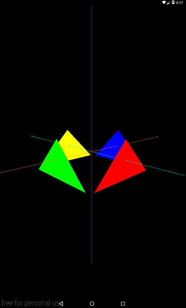
Далее, смотрим метод createViewMatrix. Он ключевой в этом уроке. Здесь создается матрица, которая содержит данные о камере. Напомню, что эти данные состоят из двух точек и вектора. И как видите, мы задаем их здесь:
eyeX, eyeY, eyeZ – координаты точки положения камеры, т.е. где находится камера
centerX, centerY, centerZ – координаты точки направления камеры, т.е. куда камера смотрит
upX, upY, upZ – координаты up-вектора, т.е. вектора, позволяющего задать поворот камеры вокруг оси «взгляда»
Все эти параметры пойдут на вход методу setLookAtM, который заполнит нам матрицу mViewMatrix.
В методе bindMatrix мы перемножаем матрицы mProjectionMatrix и mViewMatrix. Результат будет помещен в матрицу mMatrix. И эту матрицу мы передаем в шейдер методом glUniformMatrix4fv.
Весь остальной код знаком по прошлым урокам, не буду на нем останавливаться. Давайте лучше запустим пример и посмотрим, что он нам покажет
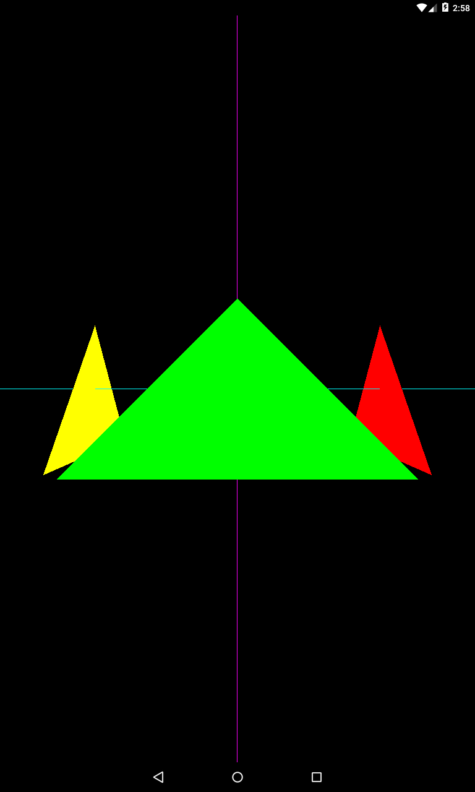
Смотрим, что мы там задавали в методе createViewMatrix.
Положение камеры - в точке (0,0,3), т.е. камера находится на оси Z.
Направление – в точку (0,0,0), т.е. камера смотрит в центр нашей системы координат.
up-вектор – (0,1,0), т.е. он направлен вверх вдоль оси Y.
Полученная картинка вполне себе соответствует заданным параметрам. Дальний от нас (синий) треугольник мы не видим, т.к. он полностью перекрыт ближним к нам (зеленым) треугольником. Также, зеленый треугольник скрывает от нас точку пересечения осей. Потому что эта точка находится за ним. В общем, Z-буфер работает, все ок.
Голубая линия – это ось X, фиолетовая – Y.
Положение
Давайте изменим параметры камеры, в методе createViewMatrix поменяем:
eyeZ = 2
Т.е. переместим камеру чуть ближе к точке (0,0,0)
Запускаем
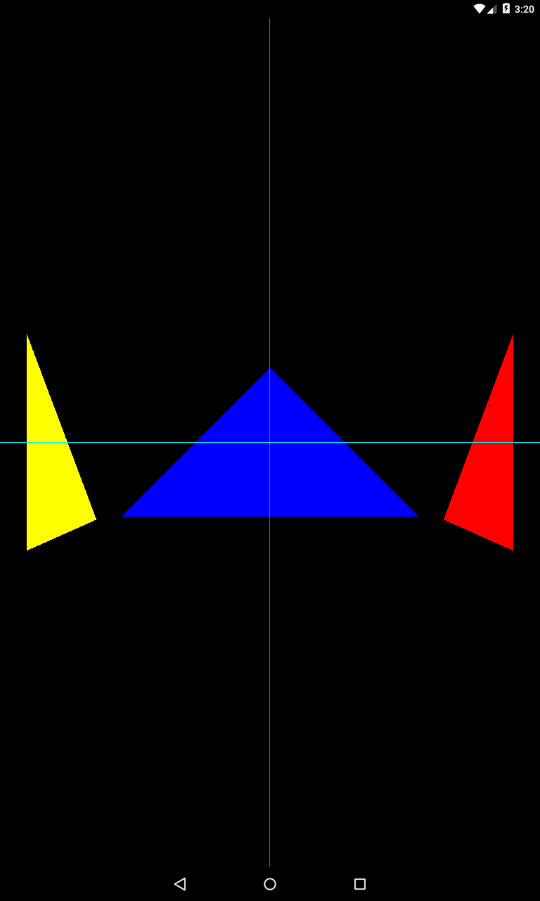
Пропал зеленый треугольник. Почему? Его координата на оси Z была 0.9. Камера же на оси Z сейчас находится на значении 2 и смотрит на значение 0. Вроде как должна видеть точку 0.9.
Причина в параметрах frustum, который мы задаем в методе createProjectionMatrix. Near-границу мы задали равной 2. Т.е. камера начнет «видеть» предметы, которые находятся минимум на расстоянии 2 от нее. А т.к. расстояние между зеленым треугольником и камерой сейчас равно 2 – 0.9 = 1.1, поэтому камера его не видит.
В примере до этого, когда eyeZ был равен 3, камера была в точке 3 на оси Z, и между ней и зеленым треугольником было расстояние 3 – 0.9 = 2.1. Т.е. зеленый треугольник был в зоне frustum и камера его видела.
Изменим параметры камеры:
eyeZ = 9
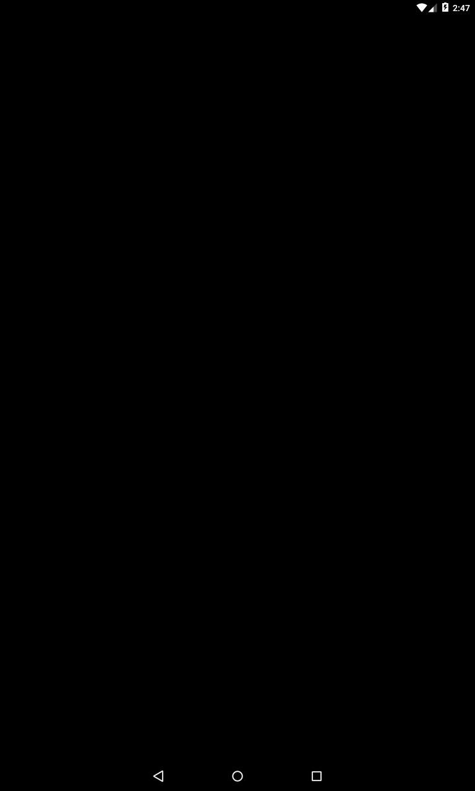
На экране ничего не видно. Снова обращаем внимание на параметры frustum. В них far-граница = 8. Т.е. все, что находится на расстоянии большем, чем 8, камера не видит.
В нашем примере, камера находится в точке 9 на оси Z, смотрит вдоль оси Z в точку (0,0,0) и дальняя граница видимости находится на значении 9 – 8 = 1 на оси Z. А ближайший к камере треугольник находится на 0.9. Поэтому камера его не видит. Другие треугольники находятся еще дальше, их тоже не видно.
Подвинем камеру чуть ближе
eyeZ = 7
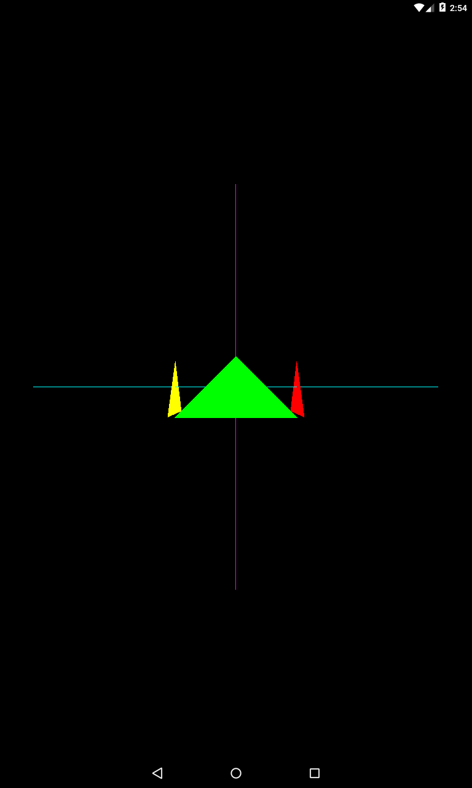
Треугольники попадают в область frustum, и камера их видит.
Сейчас камера находится на одной стороне оси Z, давайте переместимся на другую сторону.
eyeZ = -4
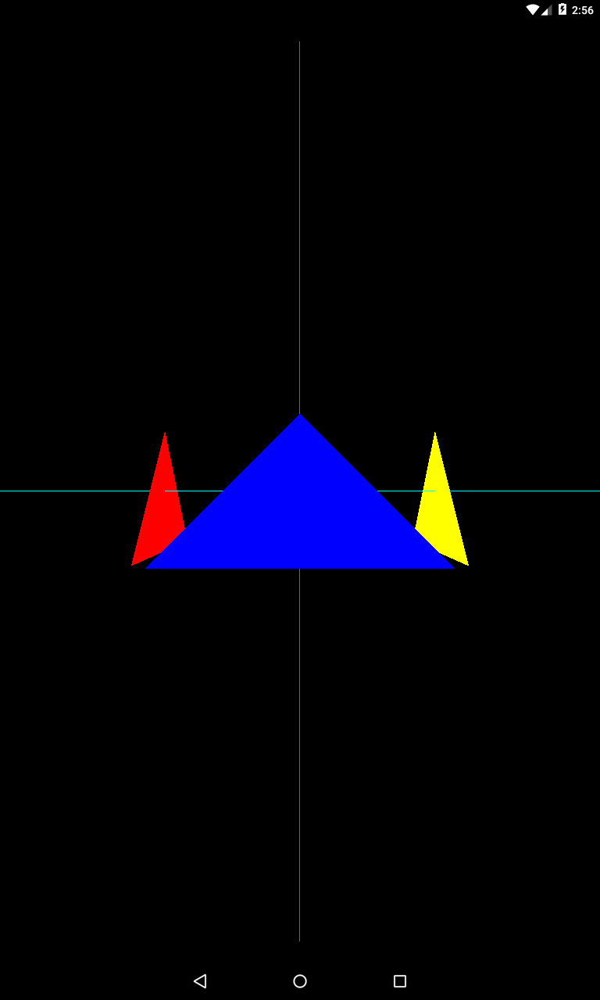
Видно, что камера смотрит на треугольники с другой стороны. Мы переместили камеру на другую сторону оси Z, но смотреть она продолжает на точку (0,0,0) - тут мы ничего не меняли. И up-вектор остался тот же.
Переместим камеру на ось X
eyeX = 3
eyeY = 0
eyeZ = 0
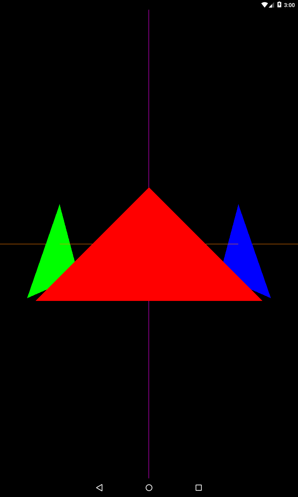
Теперь красный треугольник находится ближе всех к камере. И стала видна ось Z, она оранжевая.
Поместим камеру между осями X и Z
eyeX = 2
eyeY = 0
eyeZ = 4

Поднимем камеру по оси Y
eyeX = 2
eyeY = 3
eyeZ = 4

Смотрим на треугольники сверху. При этом отлично видны все три оси и точка их пересечения.
Опустим камеру
eyeX = 2
eyeY = -2
eyeZ = 4

Теперь камера смотрит снизу
Направление
Точку положения камеры мы протестировали, теперь попробуем менять направление камеры.
Поместим камеру снова на ось Z
eyeX = 0
eyeY = 0
eyeZ = 4
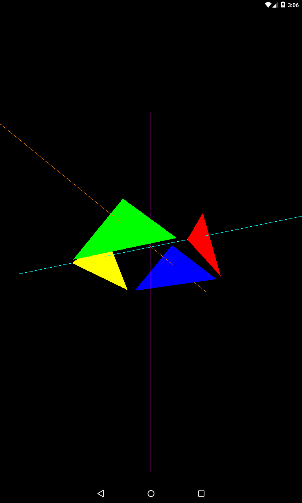
Камера смотрит в точку (0,0,0). Изменим это
centerX = 1;
Т.е. изменим направление камеры чуть вправо вдоль оси X.
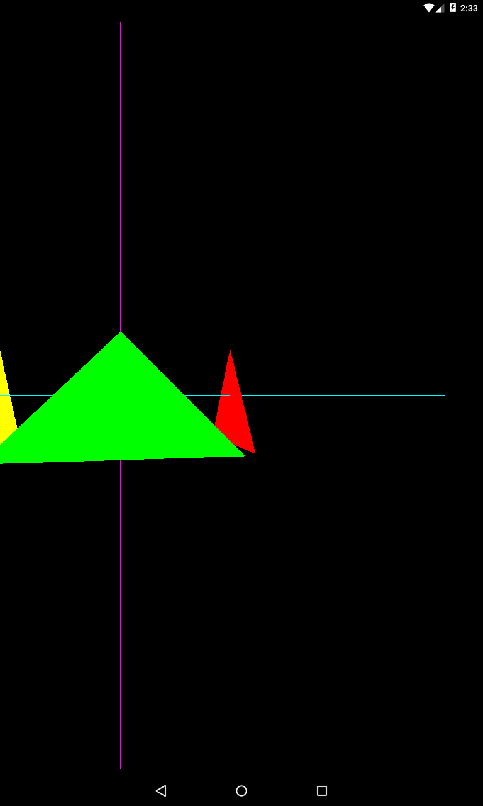
Теперь влево
centerX = -1;
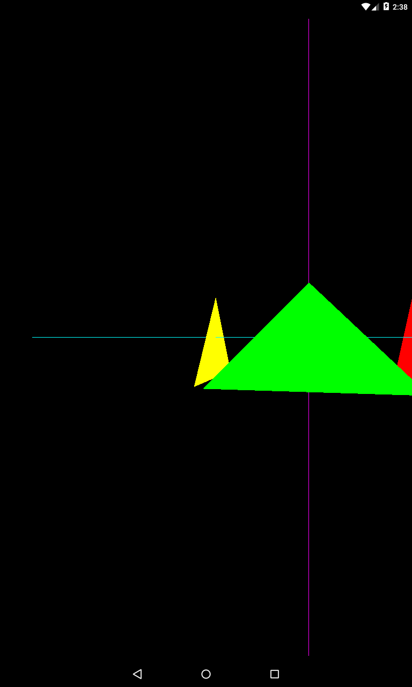
Вверх
centerY = 2;
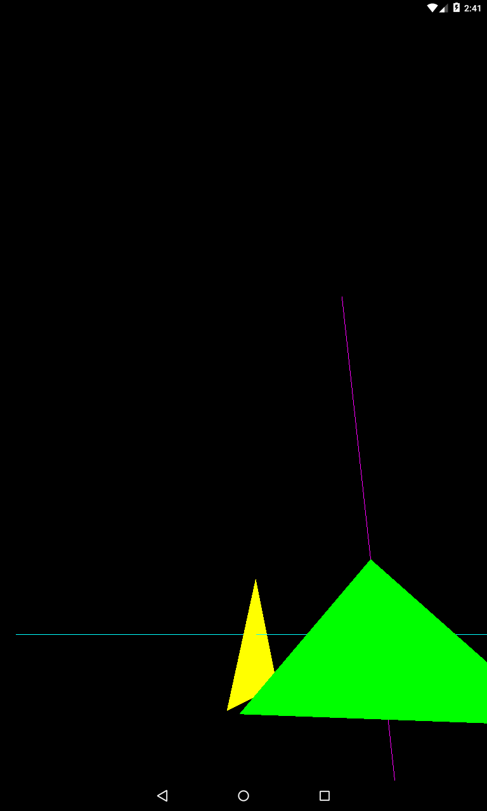
Вниз
centerY = -3;
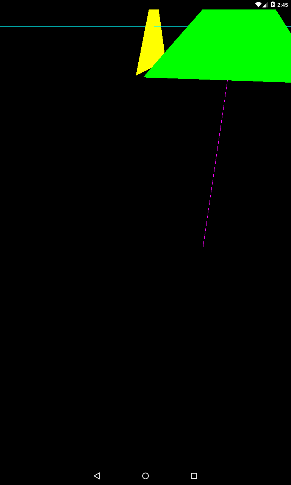
centerZ я не менял, попробуйте менять его самостоятельно, чтобы увидеть, что направление камеры при этом будет меняться, даже если X и Y неизменны.
up-вектор
Осталось рассмотреть вектор, который задает поворот камеры.
Сбросим направление камеры на (0,0,0)
centerX = 0;
centerY = 0;
centerZ = 0;
Вектор сейчас задан как (0,1,0), т.е. камера повернута так, что ее up-вектор смотрит вверх, вдоль оси Y.
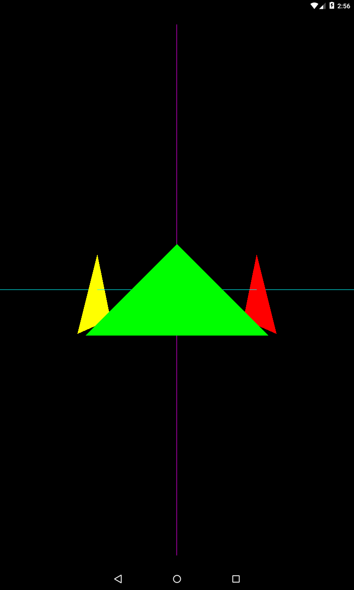
Давайте повернем камеру чуть вправо
upX = 1;
Т.е. теперь up-вектор равен (1,1,0). Т.е. он смотрит уже не вверх вдоль оси Y, а вверх и вправо – между осей Y и X.
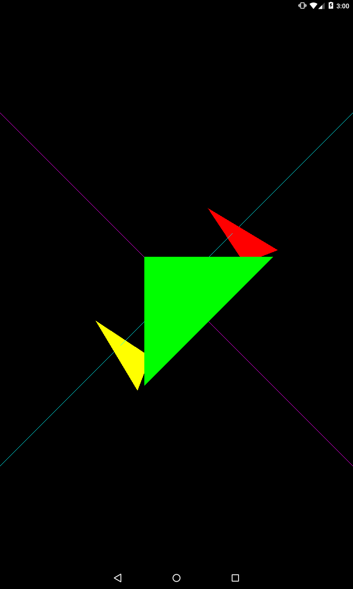
Можно не так сильно повернуть к оси X
upX = 0.2f;
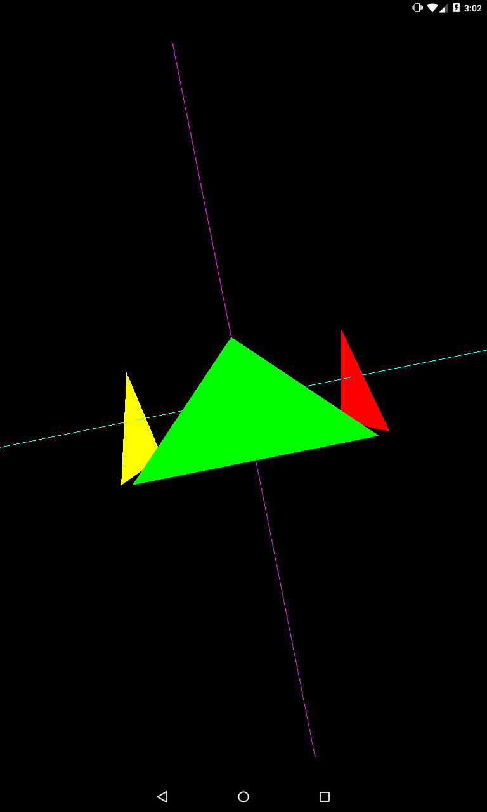
А можно повернуть на 90 градусов, так, чтобы up-вектор был того же направления что и ось X.
upX = 1;
upY = 0;
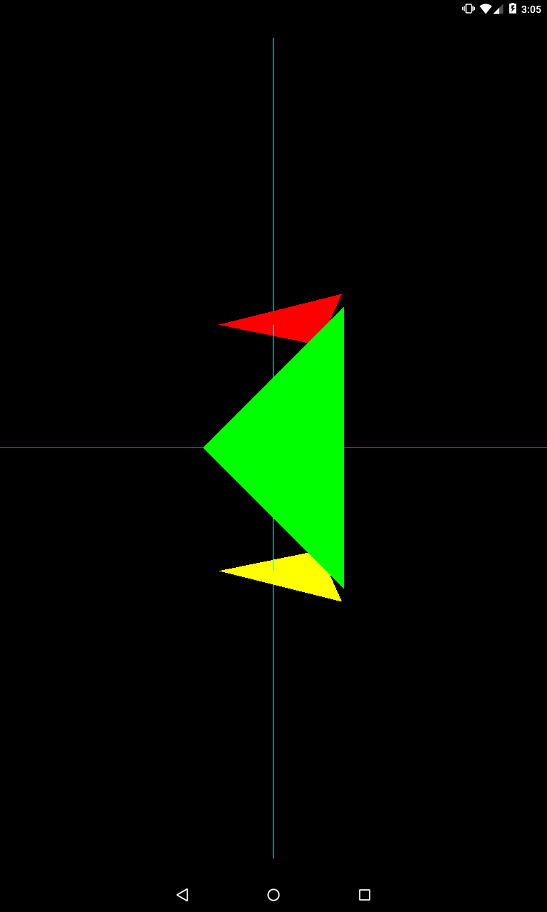
Уберем поворот направо, и направим up-вектор вниз вдоль оси Y
upX = 0;
upY = -1;
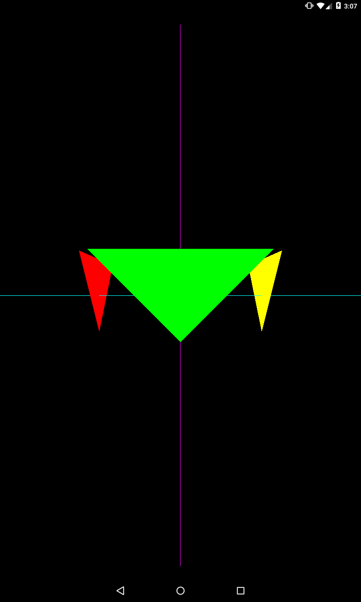
Камера перевернулась вниз головой.
Анимация
Давайте добавим немного движения в нашу статичную картинку. Все действия продолжаем выполнять в классе OpenGLRenderer.
Добавляем константу
private final static long TIME = 10000; Поменяем метод onDrawFrame. Добавим в самое его начало вызов методов createViewMatrix и bindMatrix.
@Override
public void onDrawFrame(GL10 arg0) {
createViewMatrix();
bindMatrix();
...
}
Нам это понадобится, чтобы каждый кадр пересчитывать матрицу и передавать ее в шейдер.
Перепишем метод createViewMatrix
private void createViewMatrix() {
float time = (float)(SystemClock.uptimeMillis() % TIME) / TIME;
float angle = time * 2 * 3.1415926f;
// точка положения камеры
float eyeX = (float) (Math.cos(angle) * 4f);
float eyeY = 1f;
float eyeZ = 4f;
// точка направления камеры
float centerX = 0;
float centerY = 0;
float centerZ = 0;
// up-вектор
float upX = 0;
float upY = 1;
float upZ = 0;
Matrix.setLookAtM(mViewMatrix, 0, eyeX, eyeY, eyeZ, centerX, centerY, centerZ, upX, upY, upZ);
}
Этот метод теперь будет вызываться каждый кадр. Используем это для создания анимации. Для этого будем выполнять ряд вычислений:
1) Используя время (SystemClock.uptimeMillis) и константу TIME будем вычислять в переменную time float значение от 0 до 1. Т.е. переменная time будет от 0 плавно увеличиваться до 1, затем с 1 сбрасываться в 0, снова плавно увеличиваться до 1 и т.д.
2) Далее, умножая это значение на 2 и на число Пи, будем получать диапазон значений от 0 до 2 * Пи. А это уже угол, выраженный в радианах.
3) Передавая полученный угол в cos или sin, будем получать значение в диапазоне от -1 до 1. Т.е. значение будет плавно курсировать между -1 и 1, туда-обратно. Если вдруг вам это непонятно, то имеет смысл почитать что-нить базовое по тригонометрии.
4) Остается умножить полученный результат на, например, 4 и мы получим значение которое будет бегать между – 4 и 4.
Поместим это значение в eyeX. Т.е. камера будет перемещаться вдоль оси X, от -4 до 4.
Запускаем, и получаем примерно вот такой результат
upX = 0;
upY = -1;

Если повесим динамику на eyeY, то получим камеру, которая перемещается вверх/вниз
eyeX = 2f;
eyeY = (float) (Math.cos(angle) * 3f);
eyeZ = 4f;
Сделав так:
eyeX = (float) (Math.cos(angle) * 4f);
eyeY = 1f;
eyeZ = (float) (Math.sin(angle) * 4f);
получим камеру, которая крутится вокруг треугольников.

Соответственно, вы можете экспериментировать и вешать эти значения на разные координаты и получать различные траектории движения/направления/поворота камеры.
Небольшое дополнение по up-вектору
Давайте вернемся к одному из рассмотренных примеров, когда положение камеры мы задавали таким образом
eyeX = 2
eyeY = 3
eyeZ = 4
centerX = 0
centerY = 0
centerZ = 0
upX = 0
upY = 1
upZ = 0
И получали такой результат
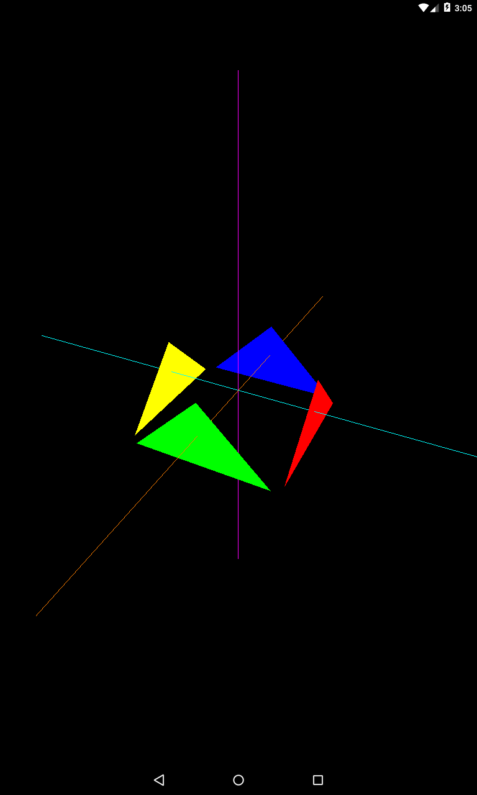
Если представить себе в трехмере эту сцену, то очевидно, что камера смотрит немного вниз относительно своего положения. Она находится на высоте 3 (по оси Y), а смотрит на точку с высотой 0. Для этого камере необходим небольшой наклон вниз.
Но при этом up-вектор у нас равен (0,1,0). Т.е. он строго параллелен оси Y. Теперь вспоминаем описание вектора - он должен смотреть строго вверх камеры. И т.к. камера у нас наклонена к оси Y, то получается, что up-вектор камеры никак не может быть параллельным оси Y. Он будет также наклонен в сторону оси.
Получается противоречие. Мы в коде задаем up-вектор, но в реальности он никак не может таким быть. Причина противоречия в немного некорректном описании up-вектора, которое я дал. Я его объяснил, как можно проще, чтобы сразу не усложнять. И сейчас надо будет усвоить еще немного информации. Я не знаю, как объяснить это все с точки зрения геометрии. Поэтому опишу своими словами максимально простой способ, как можно понять up-вектор.
Итак, у нас есть точка, в которую смотрит камера. И из этой точки мы проведем up-вектор. Т.е. не из камеры, а из точки, куда смотрит камера. И в зависимости от направления этого вектора, камера (которая смотрит на эту точку) повернется так, чтобы на итоговом двумерном изображении этот вектор смотрел вверх.
Т.е. в трехмере он может быть наклонен к самой камере или от нее, но на итоговой двумерной картинке он всегда будет направлен вверх.
На всякий случай напомню геометрию. Если из точки (x,y,z) провести вектор (a,b,c), то мы получим направленный отрезок между точками (x,y,z) и (x+a, y+b, z+c).
В примере камера смотрит в точку (0,0,0). Up-вектор – (0,1,0). Т.е. если из этой точки провести вектор, получится отрезок между (0,0,0) и (0,1,0). Думаю, понятно, что он будет совпадать по направлению с осью Y. Камера должна быть повернута так, что этот отрезок (а значит и ось Y) должен смотреть вверх. И мы видим на итоговой картинке, что ось Y у нас действительно смотрит вверх.
В общем, на словах это достаточно трудно объяснить. Давайте на примере посмотрим. Поменяем код так, чтобы всегда выводился up-вектор из точки куда направлена камера. Сделаем его белым цветом.
Я приведу код всего класса, чтобы не расписывать изменения
public class OpenGLRenderer implements Renderer {
private final static int POSITION_COUNT = 3;
private Context context;
private FloatBuffer vertexData;
private int uColorLocation;
private int aPositionLocation;
private int uMatrixLocation;
private int programId;
private float[] mProjectionMatrix = new float[16];
private float[] mViewMatrix = new float[16];
private float[] mMatrix = new float[16];
float centerX;
float centerY;
float centerZ;
float upX;
float upY;
float upZ;
public OpenGLRenderer(Context context) {
this.context = context;
}
@Override
public void onSurfaceCreated(GL10 arg0, EGLConfig arg1) {
glClearColor(0f, 0f, 0f, 1f);
glEnable(GL_DEPTH_TEST);
int vertexShaderId = ShaderUtils.createShader(context, GL_VERTEX_SHADER, R.raw.vertex_shader);
int fragmentShaderId = ShaderUtils.createShader(context, GL_FRAGMENT_SHADER, R.raw.fragment_shader);
programId = ShaderUtils.createProgram(vertexShaderId, fragmentShaderId);
glUseProgram(programId);
createViewMatrix();
prepareData();
bindData();
}
@Override
public void onSurfaceChanged(GL10 arg0, int width, int height) {
glViewport(0, 0, width, height);
createProjectionMatrix(width, height);
bindMatrix();
}
private void prepareData() {
float s = 0.4f;
float d = 0.9f;
float l = 3;
float[] vertices = {
// первый треугольник
-2 * s, -s, d,
2 * s, -s, d,
0, s, d,
// второй треугольник
-2 * s, -s, -d,
2 * s, -s, -d,
0, s, -d,
// третий треугольник
d, -s, -2 * s,
d, -s, 2 * s,
d, s, 0,
// четвертый треугольник
-d, -s, -2 * s,
-d, -s, 2 * s,
-d, s, 0,
// ось X
-l, 0, 0,
l, 0, 0,
// ось Y
0, -l, 0,
0, l, 0,
// ось Z
0, 0, -l,
0, 0, l,
// up-вектор
centerX, centerY, centerZ,
centerX + upX, centerY + upY, centerZ + upZ,
};
vertexData = ByteBuffer
.allocateDirect(vertices.length * 4)
.order(ByteOrder.nativeOrder())
.asFloatBuffer();
vertexData.put(vertices);
}
private void bindData() {
// координаты
aPositionLocation = glGetAttribLocation(programId, "a_Position");
vertexData.position(0);
glVertexAttribPointer(aPositionLocation, POSITION_COUNT, GL_FLOAT,
false, 0, vertexData);
glEnableVertexAttribArray(aPositionLocation);
// цвет
uColorLocation = glGetUniformLocation(programId, "u_Color");
// матрица
uMatrixLocation = glGetUniformLocation(programId, "u_Matrix");
}
private void createProjectionMatrix(int width, int height) {
float ratio = 1;
float left = -1;
float right = 1;
float bottom = -1;
float top = 1;
float near = 2;
float far = 8;
if (width > height) {
ratio = (float) width / height;
left *= ratio;
right *= ratio;
} else {
ratio = (float) height / width;
bottom *= ratio;
top *= ratio;
}
Matrix.frustumM(mProjectionMatrix, 0, left, right, bottom, top, near, far);
}
private void createViewMatrix() {
// точка положения камеры
float eyeX = 2;
float eyeY = 3;
float eyeZ = 4;
// точка направления камеры
centerX = 0;
centerY = 0;
centerZ = 0;
// up-вектор
upX = 0;
upY = 1;
upZ = 0;
Matrix.setLookAtM(mViewMatrix, 0, eyeX, eyeY, eyeZ, centerX, centerY, centerZ, upX, upY, upZ);
}
private void bindMatrix() {
Matrix.multiplyMM(mMatrix, 0, mProjectionMatrix, 0, mViewMatrix, 0);
glUniformMatrix4fv(uMatrixLocation, 1, false, mMatrix, 0);
}
@Override
public void onDrawFrame(GL10 arg0) {
glClear(GL_COLOR_BUFFER_BIT | GL_DEPTH_BUFFER_BIT);
// треугольники
glUniform4f(uColorLocation, 0.0f, 1.0f, 0.0f, 1.0f);
glDrawArrays(GL_TRIANGLES, 0, 3);
glUniform4f(uColorLocation, 0.0f, 0.0f, 1.0f, 1.0f);
glDrawArrays(GL_TRIANGLES, 3, 3);
glUniform4f(uColorLocation, 1.0f, 0.0f, 0.0f, 1.0f);
glDrawArrays(GL_TRIANGLES, 6, 3);
glUniform4f(uColorLocation, 1.0f, 1.0f, 0.0f, 1.0f);
glDrawArrays(GL_TRIANGLES, 9, 3);
// оси
glLineWidth(1);
glUniform4f(uColorLocation, 0.0f, 1.0f, 1.0f, 1.0f);
glDrawArrays(GL_LINES, 12, 2);
glUniform4f(uColorLocation, 1.0f, 0.0f, 1.0f, 1.0f);
glDrawArrays(GL_LINES, 14, 2);
glUniform4f(uColorLocation, 1.0f, 0.5f, 0.0f, 1.0f);
glDrawArrays(GL_LINES, 16, 2);
// up-вектор
glLineWidth(3);
glUniform4f(uColorLocation, 1.0f, 1.0f, 1.0f, 1.0f);
glDrawArrays(GL_LINES, 18, 2);
}
}
Изменений в целом немного. Переменные, которые содержали данные о направлении камеры и up-векторе теперь вынесены из метода в члены класса. Они используются в методе prepareData, для задания координат отрезка, который будет нам показывать up-вектор, построенный из точки, в которую смотрит камера. И в методе onDrawFrame добавился вывод этого отрезка на экран.
Запускаем
Видим белый отрезок, показывающий up-вектор. Вы можете задавать любые точки положения и направления камеры, и up-вектор. И в получившемся изображении up-вектор будет направлен вверх.
Еще пара примеров-результатов
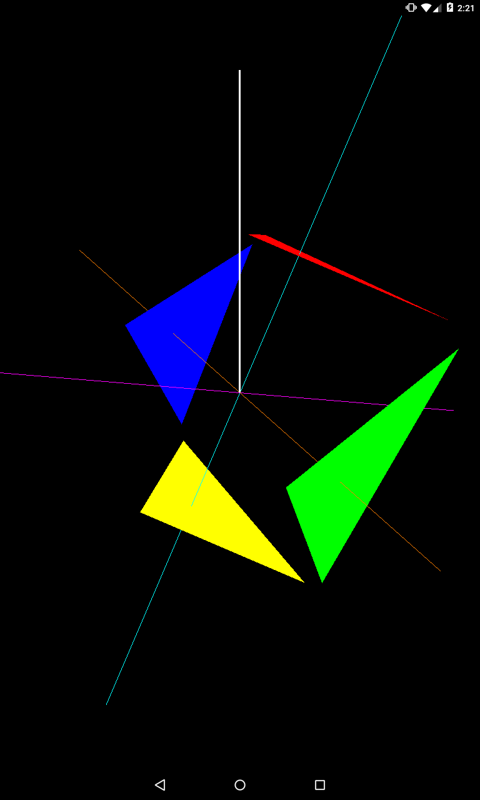
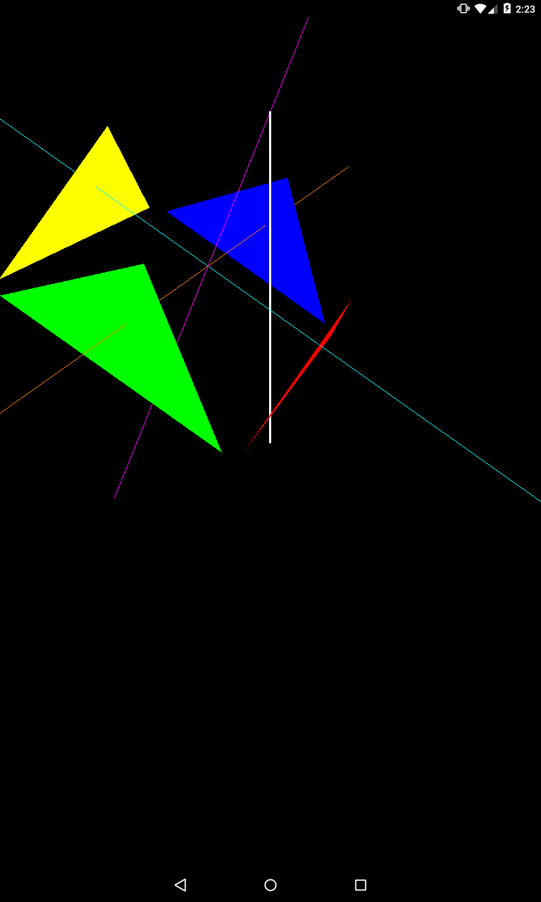
Надеюсь, что после этого up-вектор станет вам понятен.